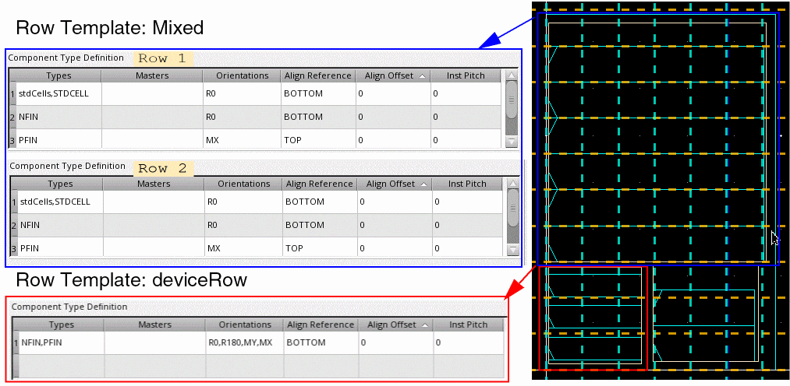
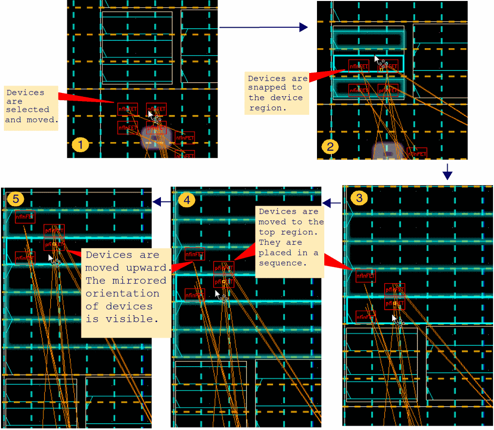

Assisted Placement of Multiple Device Instances
You can select and move multiple instances simultaneously. Each instance is snapped to rows in real time, while honoring the row attributes. Consider a design with two row regions, each with different type of rows:
- Top Region: Rows have been generated using the Mixed row template. This template comprises two row types with similar definitions. They can contain standard cells, PFIN devices, and NFIN devices. The NFIN devices are aligned to the bottom, while the PFIN devices are aligned to the top. The PFIN devices have a mirrored orientation.
-
Bottom Region: Rows have been generated using the deviceRow row template, which has a single row type. The row can contain PFIN and NFIN devices. All devices are bottom aligned. All device orientations are supported.

The following images depict the snapping behavior of individual devices when two PFIN and NFIN devices are moved:

Related Topics
Setting the Assisted Placement Options in the Placement Options Form
Setting Common Options in the Placement Options Form
Return to top